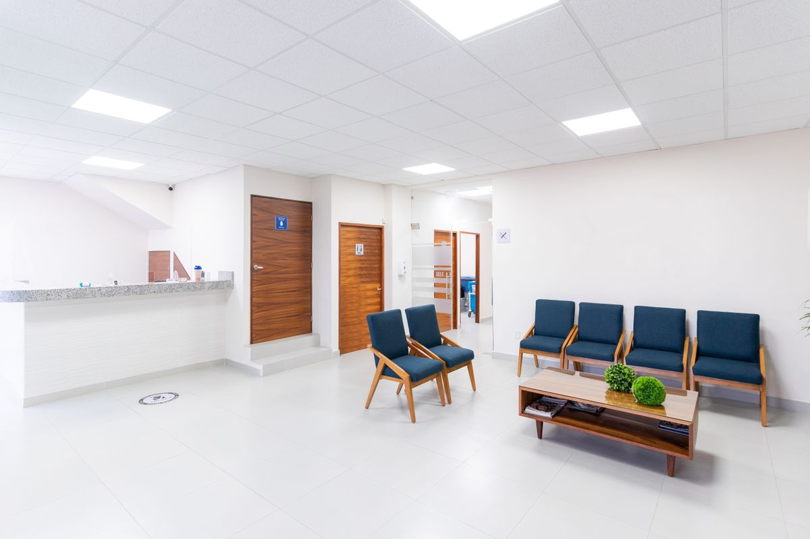

Unsere Leistungen
Wir begleiten Sie durch alle Lebensphasen – mit Vorsorge, moderner Diagnostik und der Behandlung akuter wie chronischer Erkrankungen.
Ihre erste Anlaufstelle bei Beschwerden, Infekten und allen gesundheitlichen Fragen.
Gesundheits-Check-up ab 35, Krebsvorsorge und Hautkrebs-Screening.
Schutzimpfungen nach STIKO, Grippe- & Reiseimpfungen, reisemedizinische Beratung.
Strukturierte Betreuung bei Diabetes, KHK, Asthma, COPD und Bluthochdruck.
EKG, Langzeit-EKG, Langzeit-Blutdruck, Lungenfunktion und Ultraschall.
Blutuntersuchungen mit schneller, zuverlässiger Auswertung.
Gesundheitszeugnisse, Atteste und Untersuchungen für Beruf und Führerschein.
Für Patient:innen, die nicht selbst in die Praxis kommen können.
Wundversorgung und kleine operative Eingriffe in der Praxis.
Vorsorge & Beratung
Vorsorge ist der beste Schutz. Wir nehmen uns Zeit für Ihre Untersuchung, erklären verständlich und beraten Sie individuell – ob Check-up, Impfung oder Lebensstil.
Diagnostik in der Praxis
Viele Untersuchungen führen wir direkt bei uns durch – das spart Ihnen Wege und Wartezeit und liefert schnell ein klares Ergebnis.
Häufige Fragen
Am einfachsten telefonisch unter 02161 24570 oder über das Kontaktformular. Für akute Fälle gibt es zusätzlich unsere offene Sprechstunde.
Ja, wir freuen uns über neue Patient:innen – gesetzlich wie privat versichert. Bringen Sie zum ersten Termin bitte Ihre Versichertenkarte mit.
Folgerezepte und Überweisungen können Sie bequem telefonisch oder über das Formular anfordern und in der Praxis abholen.
Sie wählen einfach die Praxis, die am nächsten bei Ihnen liegt – Sandradstraße, Neusser Straße oder Hamarstraße.
Außerhalb unserer Öffnungszeiten hilft der ärztliche Bereitschaftsdienst unter der bundesweiten Nummer 116117. In Notfällen wählen Sie 112.
Rufen Sie uns an oder vereinbaren Sie einen Termin – wir beraten Sie gerne.